Räkna boten för fart och mobil
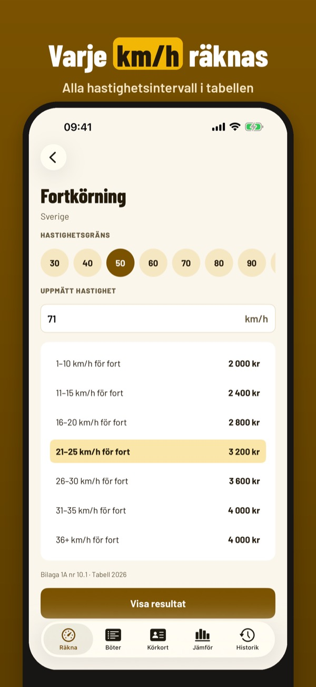
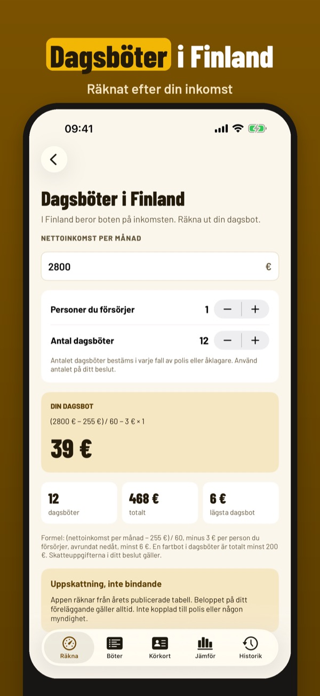
Böteskoll räknar ut ungefär vad en trafikbot kostar i Sverige och grannländerna – från årets bötestabeller, direkt på telefonen.
Fartkalkylatorn, Sveriges bötestabell och betalningspåminnelsen kan användas utan köp. Fullversionen är ett engångsköp som låser upp alla länder, dagsböter, jämförelse, körkortsregler och historik. Ingen prenumeration.
Böteskoll visar uppskattningar från årliga bötestabeller. Beloppen är inte bindande – det belopp som står på ditt föreläggande gäller. Appen är inte kopplad till polis eller någon myndighet.
Terms of Use (EULA): https://www.apple.com/legal/internet-services/itunes/dev/stdeula/
Privacy: https://baytechbv.github.io/privacy/botekalk-nordic/
Regn ut forelegg for fart
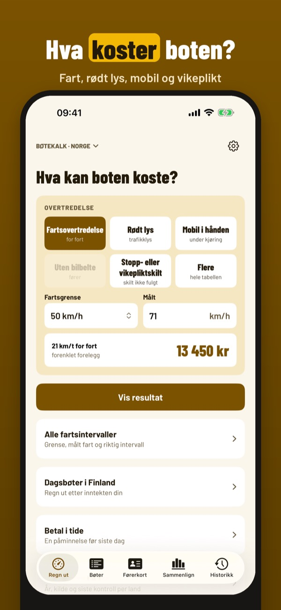
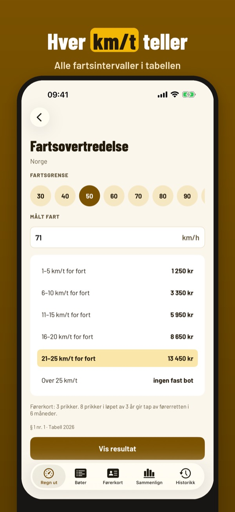
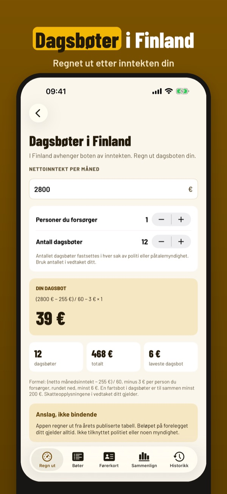
Bøtekalk regner ut omtrent hva et forelegg i trafikken koster i Norge og nabolandene – fra årets satser, rett på telefonen.
Fartskalkulatoren, satsene for ett land og betalingspåminnelsen kan brukes uten kjøp. Fullversjonen er et engangskjøp som låser opp alle land, dagsbøter, sammenligning, prikker og historikk. Ingen abonnement.
Bøtekalk viser anslag fra årlige satser. Beløpene er ikke bindende – det som står i forelegget ditt, gjelder. Appen er ikke knyttet til politiet eller noen myndighet.
Terms of Use (EULA): https://www.apple.com/legal/internet-services/itunes/dev/stdeula/
Privacy: https://baytechbv.github.io/privacy/botekalk-nordic/
Beregn bøden for fart og mobil
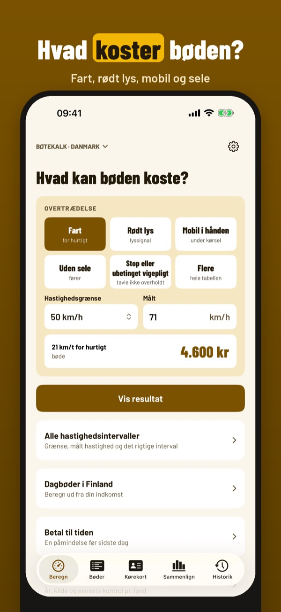
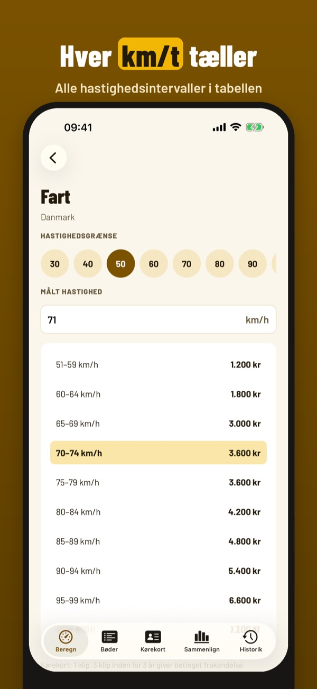
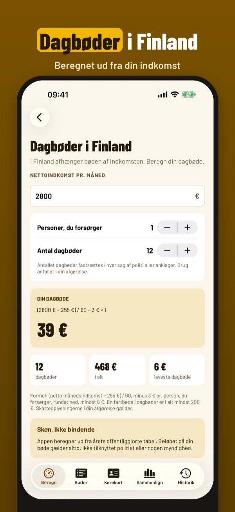
Bøtekalk beregner cirka, hvad en bøde i trafikken koster i Danmark og nabolandene – ud fra årets takster, direkte på telefonen.
Fartberegneren, taksterne for ét land og betalingspåmindelsen kan bruges uden køb. Fuld version er et engangskøb, der låser alle lande, dagbøder, sammenligning, klip og historik op. Intet abonnement.
Bøtekalk viser skøn ud fra årlige takster. Beløbene er ikke bindende – det, der står i dit bødeforelæg, gælder. Appen er ikke tilknyttet politiet eller nogen myndighed.
Terms of Use (EULA): https://www.apple.com/legal/internet-services/itunes/dev/stdeula/
Privacy: https://baytechbv.github.io/privacy/botekalk-nordic/
Laske päiväsakko ja rikesakko
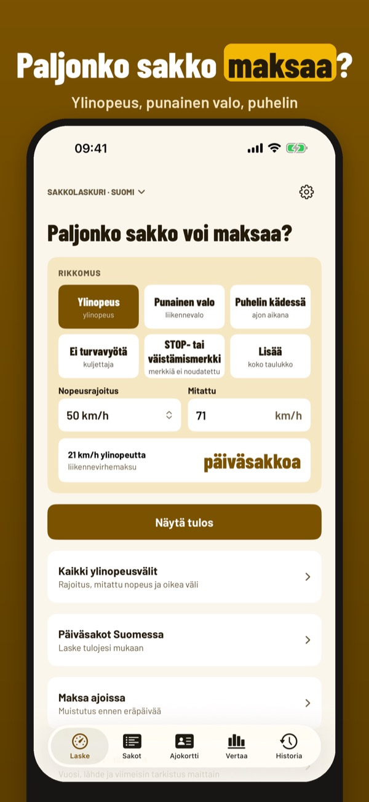
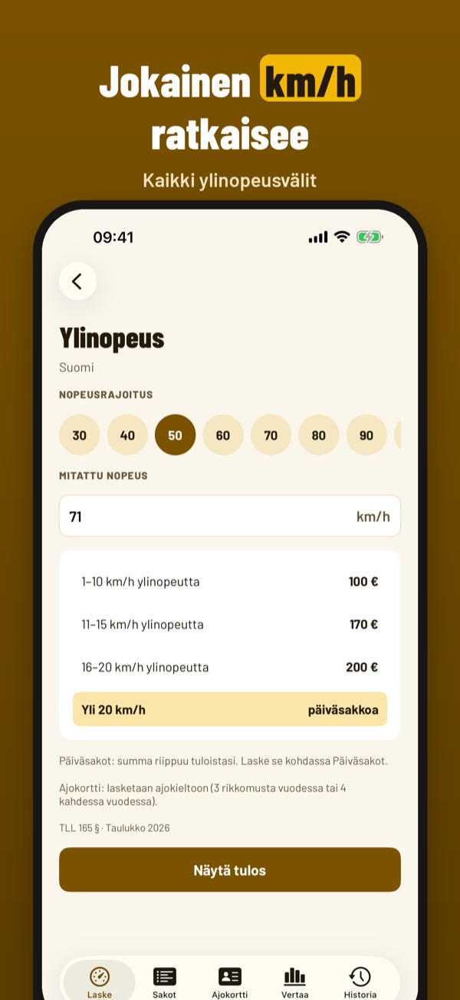
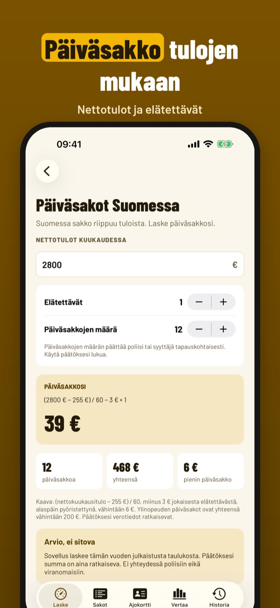
Sakkolaskuri arvioi, paljonko liikennesakko maksaa Suomessa ja naapurimaissa – vuoden taulukoista ja päiväsakon kaavalla, suoraan puhelimessa.
Ylinopeuslaskinta, yhden maan taulukkoa ja maksumuistutusta voi käyttää ilman ostoa. Täysi versio on kertaosto, joka avaa kaikki maat, päiväsakot, vertailun, ajokorttisäännöt ja historian. Ei tilausta.
Sakkolaskuri näyttää arvioita vuosittaisista taulukoista. Summat eivät ole sitovia – saamasi päätöksen summa on voimassa. Sovellus ei liity poliisiin eikä mihinkään viranomaiseen.
Terms of Use (EULA): https://www.apple.com/legal/internet-services/itunes/dev/stdeula/
Privacy: https://baytechbv.github.io/privacy/botekalk-nordic/
Boete voor snelheid berekenen
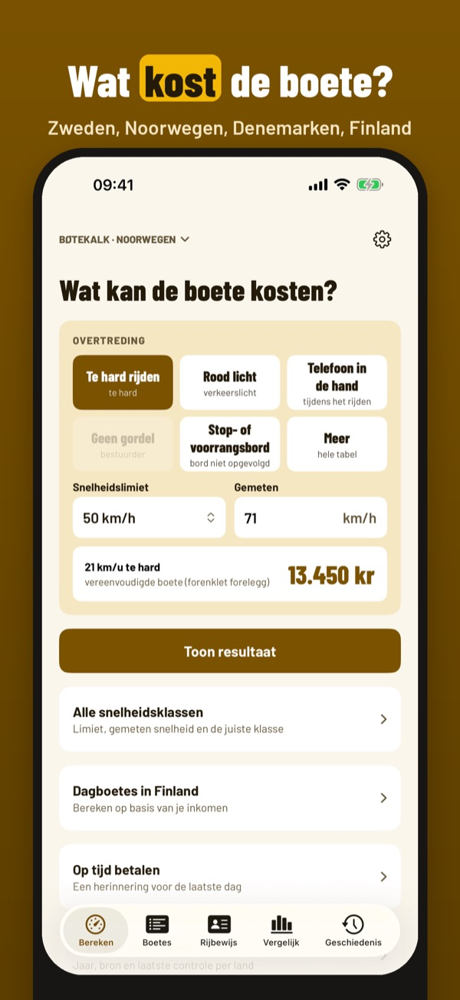
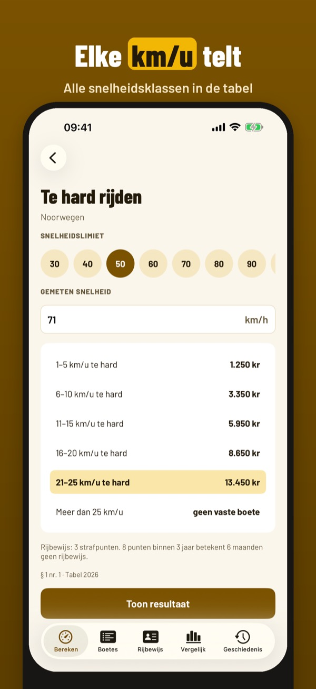
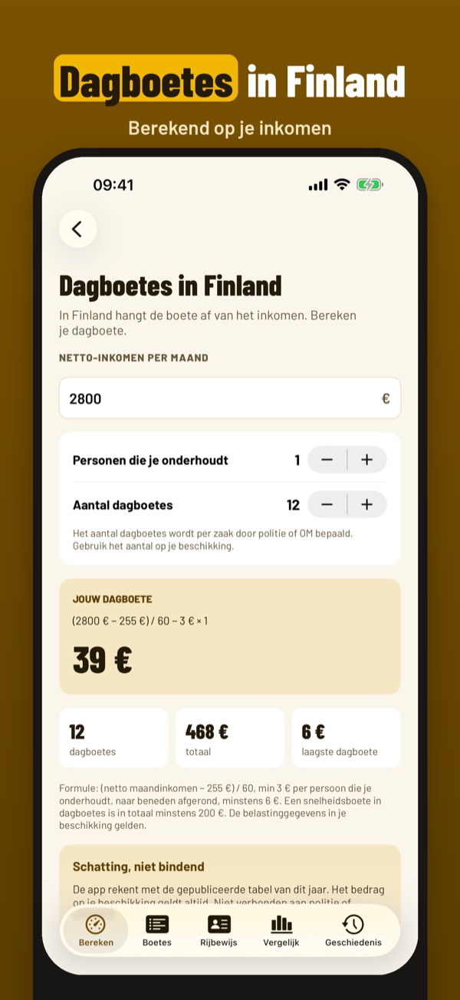
Bøtekalk rekent ongeveer uit wat een verkeersboete kost in Zweden, Noorwegen, Denemarken en Finland – uit de gepubliceerde tabellen van dit jaar, op je telefoon. Handig voor je autovakantie in het Noorden.
De snelheidscalculator, de tabel van één land en de betaalherinnering gebruik je zonder aankoop. De volledige versie is een eenmalige aankoop voor alle vier landen, dagboetes, vergelijking, rijbewijsregels en geschiedenis. Geen abonnement.
Bøtekalk toont schattingen uit jaarlijkse tabellen. De bedragen zijn niet bindend – het bedrag op je beschikking geldt. De app is niet verbonden aan politie of een overheidsinstantie.
Terms of Use (EULA): https://www.apple.com/legal/internet-services/itunes/dev/stdeula/
Privacy: https://baytechbv.github.io/privacy/botekalk-nordic/
Bussen für Tempo und Handy
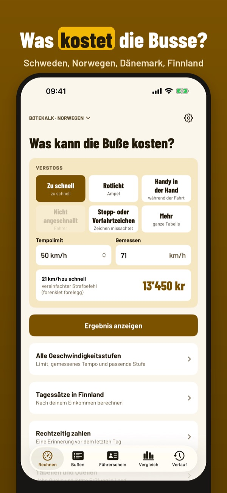
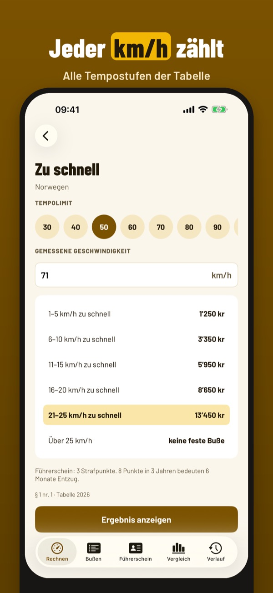
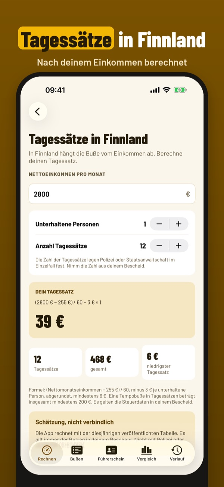
Bøtekalk rechnet ungefähr aus, was eine Verkehrsbusse in Schweden, Norwegen, Dänemark und Finnland kostet – aus den veröffentlichten Tabellen dieses Jahres, direkt auf dem Telefon. Praktisch für die Autoreise in den Norden.
Tempo-Rechner, die Tabelle eines Landes und die Zahlungserinnerung nutzt du ohne Kauf. Die Vollversion ist ein Einmalkauf für alle vier Länder, Tagessätze, Vergleich, Ausweisregeln und Verlauf. Kein Abo.
Bøtekalk zeigt Schätzungen aus jährlichen Tabellen. Die Beträge sind nicht verbindlich – es gilt der Betrag auf deiner Busse. Die App gehört nicht zu Polizei oder Behörden.
Terms of Use (EULA): https://www.apple.com/legal/internet-services/itunes/dev/stdeula/
Privacy: https://baytechbv.github.io/privacy/botekalk-nordic/